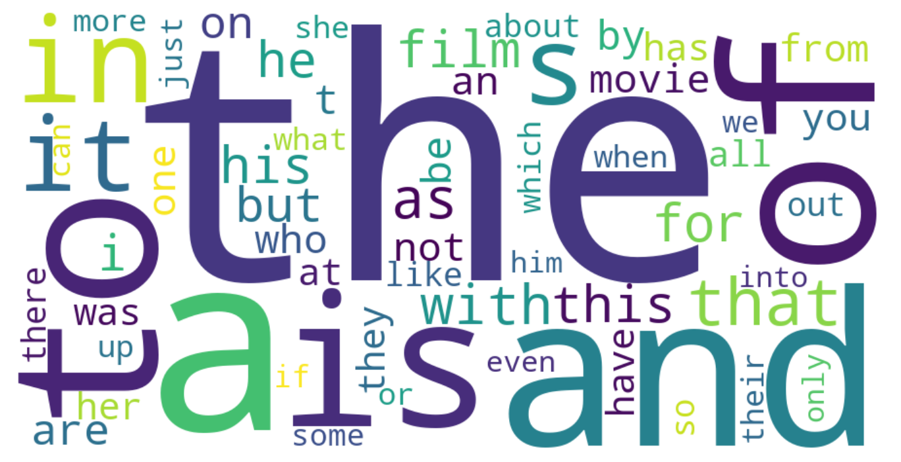
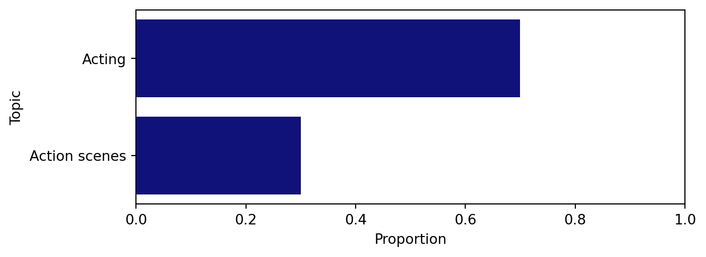
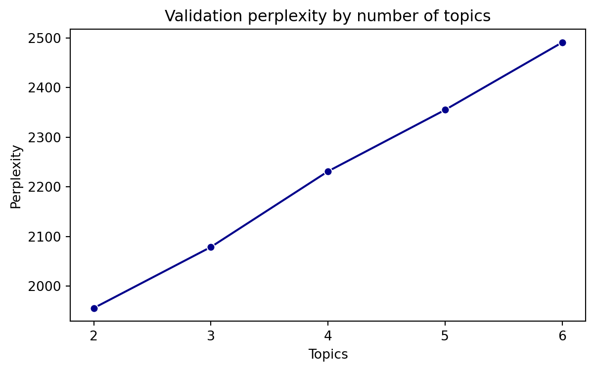
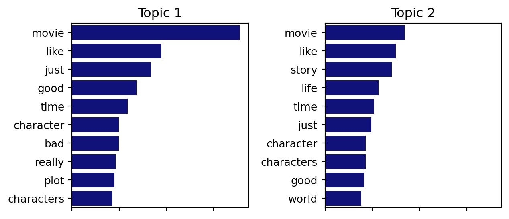
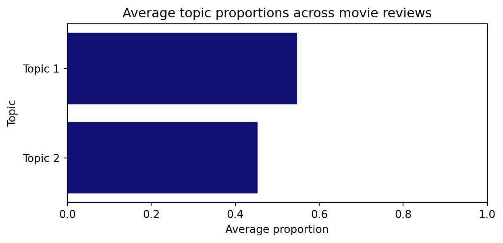
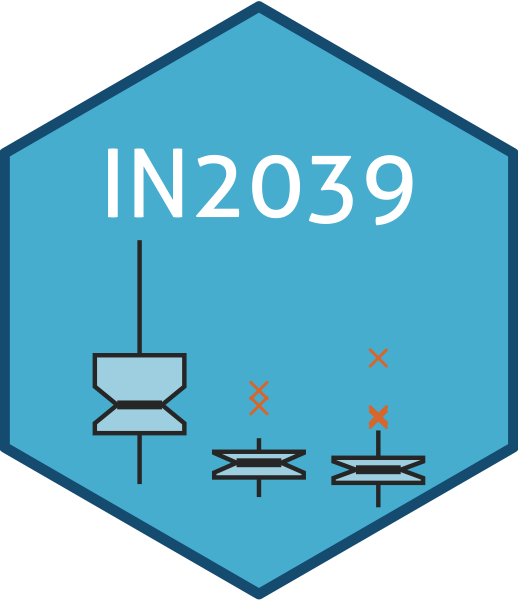

Introduction to Text Analytics
IN2039: Data Visualization for Decision Making
Department of Industrial Engineering
Agenda
- Introduction to text analytics
- Text cleaning and word clouds
- Document-term matrix and TF-IDF
- Topic modeling with Latent Dirichlet Allocation
- Discussion
Introduction to Text Analytics
Text data
So far, we have worked mainly with numerical and categorical variables.
However, a large amount of information is stored in the form of text.
- Comments on social media.
- Reviews of movies, products, and services.
- Responses to open-ended survey questions.
- Customer complaints.
Text analytics
Text analytics is the process of extracting useful information from text data.
In this topic, we will transform text into numerical data that can be summarized and visualized.
Our goal is not to read every document individually, but to identify patterns across many documents.
Example: Movie reviews
Imagine that you work for a movie streaming platform and have access to thousands of written reviews.
Reading all the reviews manually would take a considerable amount of time.
Can we use data visualization to understand what viewers talk about when reviewing movies?
Principle 1: Define the question
- What words appear most frequently in movie reviews?
- Which words are particularly informative about a review?
- What are the main themes discussed by viewers?
- How common are these themes across the reviews?
Principle 2: Turn data into information
| Question | Method or graph |
|---|---|
| What words are frequent? | Word cloud, bar chart |
| Which words are informative? | TF-IDF, bar chart |
| What themes appear? | Topic modeling, bar charts |
| How common are the themes? | Topic prevalence plot |
Load the libraries
We will continue using pandas, seaborn, and matplotlib.
We will also use three libraries for text analytics: nltk, wordcloud, and sklearn (scikit-learn).
If necessary, install them in Google Colab using:
Load the data
We will use the Movie Reviews corpus distributed with NLTK, containing 2,000 English-language movie reviews.
Create a dataset
A document and a corpus
- A document is one unit of text under study (one movie review in our example).
- A corpus is a collection of documents (all the movie reviews).
- A token is a unit of text, such as a word.
plot : two teen couples go to a church party , drink and then drive .
they get into an accident .
one of the guys dies , but his girlfriend continues to see him in her life , and has nightmares .
what's the deal ?
watch the movie and " sorta " find out . . .
critique : a mind-fuck movie for the teen generation that touches on a very cool idea Text Cleaning and Word Clouds
Why clean text?
The words Movie, movie, and movie! convey essentially the same information in this example.
However, a computer may treat them as different strings.
We need to define how to represent the text before computing summaries.
Basic text cleaning
- Convert uppercase letters to lowercase.
- Remove punctuation and numbers (when not relevant).
- Remove unnecessary spaces.
- Separate the text into words (tokenization).
Example of text cleaning
great movie i watched it timesThe expression [^a-z\s] identifies characters other than English letters and whitespace.
Clean the reviews
We apply the same operations to the column review.
We keep the original text so that we can return to it when interpreting our results.
Tokenization
We use .str.split() to separate the words in each review.
A frequency table for words
Remember that .explode() creates one row for each element of a list.
Word cloud
A word cloud displays words using different font sizes.
In a frequency-based word cloud, words that occur more frequently are displayed using larger fonts.
The goal is to quickly identify prominent words in a corpus.
Word cloud in Python
We use WordCloud() from the wordcloud library. The method .generate_from_frequencies() uses our frequency table.

Do the largest words help us answer our research question?
Stop words
Words such as the, a, of, and is occur frequently but are often not useful for identifying themes.
We call such words stop words.
We can remove them before constructing the word cloud.
Remove stop words in Python
Scikit-learn provides a list of English stop words.
The expression inside brackets keeps words that satisfy both conditions.
The new word cloud

Stemming
Words with different endings can refer to similar concepts.
| Original words | Stem |
|---|---|
| play, playing, played | play |
| connect, connected, connecting | connect |
| movies, movie | movi |
Stemming reduces words to a common form using rules for removing or modifying endings.
Stemming in Python
We use the Porter stemmer from NLTK.
['plot',
'teen',
'coupl',
'church',
'parti',
'drink',
'drive',
'accid',
'guy',
'die',
'girlfriend',
'continu',
'life',
'nightmar',
'deal']Word cloud after stemming
Principle 3: Apply graphic design principles
A word cloud is useful for exploration, but it is difficult to compare word frequencies precisely.
An alternative is a horizontal bar chart.

Document-Term Matrix and TF-IDF
From text to numerical data
Consider three short documents:
- Document 1: funny movie funny
- Document 2: funny actor
- Document 3: action movie
We count the number of times each term occurs in each document.
Document-term matrix
| Document | action | actor | funny | movie |
|---|---|---|---|---|
| 1 | 0 | 0 | 2 | 1 |
| 2 | 0 | 1 | 1 | 0 |
| 3 | 1 | 0 | 0 | 1 |
Each row represents a document, and each column represents a term.
Each entry is the frequency of a term in a document.
Bag of words
The document-term matrix is an example of the bag-of-words representation.
- We retain the frequency of each term.
- We lose the order of the words.
For example, dog bites man and man bites dog have the same bag-of-words representation.
Document-term matrix in Python
We use CountVectorizer() from scikit-learn.
| action | actor | funny | movie | |
|---|---|---|---|---|
| 0 | 0 | 0 | 2 | 1 |
| 1 | 0 | 1 | 1 | 0 |
| 2 | 1 | 0 | 0 | 1 |
Create the matrix for the reviews
We join the cleaned terms to obtain one string per review.
Inspect the matrix
| abandoned | abilities | ability | able | absolute | absolutely | absurd | academy | |
|---|---|---|---|---|---|---|---|---|
| 0 | 0 | 0 | 0 | 0 | 0 | 0 | 0 | 0 |
| 1 | 0 | 0 | 0 | 0 | 0 | 0 | 0 | 0 |
| 2 | 0 | 0 | 0 | 0 | 0 | 0 | 0 | 0 |
| 3 | 0 | 0 | 0 | 1 | 0 | 0 | 0 | 0 |
| 4 | 0 | 0 | 0 | 0 | 0 | 0 | 0 | 0 |
The matrix contains many zeros because most documents contain only a small subset of all terms.
Term frequency (TF)
Let \(n_{dt}\) be the number of occurrences of term \(t\) in document \(d\).
A simple measure of term frequency is
\[TF_{dt}=n_{dt}.\]
However, a term can occur frequently in a document simply because it is common in almost all documents.
Inverse document frequency (IDF)
Let \(N\) be the number of documents and \(DF_t\) the number of documents containing term \(t\).
The smoothed IDF used by scikit-learn is
\[IDF_t=\log\left(\frac{1+N}{1+DF_t}\right)+1.\]
Terms occurring in fewer documents receive larger weights.
TF-IDF
We combine both quantities:
\[TF\text{-}IDF_{dt}=TF_{dt}\times IDF_t.\]
A large value indicates that a term occurs frequently in a document and is relatively uncommon across the corpus.
TF-IDF in Python
| action | actor | funny | movie | |
|---|---|---|---|---|
| 0 | 0.00 | 0.00 | 2.58 | 1.29 |
| 1 | 0.00 | 1.69 | 1.29 | 0.00 |
| 2 | 1.69 | 0.00 | 0.00 | 1.29 |
TF-IDF for movie reviews
We use the default normalization to reduce the effect of document length.
teen 0.267927
pretty 0.222820
crow 0.184494
hide 0.167978
make 0.142521
mind 0.137020
movie 0.127791
biggest 0.125236
cool 0.120385
secret 0.120170
dtype: float64Visualize informative terms
Frequency versus TF-IDF
- Frequency tells us how often a term occurs.
- TF-IDF helps us identify terms that distinguish a document from other documents.
- Neither measure directly tells us the meaning or sentiment of a document.
Topic Modeling
Can we identify themes?
A movie review may discuss several themes, such as acting, special effects, and the story.
Instead of defining these themes ourselves, can we identify them from patterns in the text?
Latent Dirichlet Allocation (LDA)
LDA is an unsupervised statistical model that identifies latent (unobserved) topics in a collection of documents.
The basic idea is that:
- Each document is a mixture of topics.
- Each topic is a probability distribution over terms.
A hypothetical example
| Term | Topic 1 | Topic 2 |
|---|---|---|
| actor | 0.40 | 0.05 |
| performance | 0.35 | 0.05 |
| explosion | 0.10 | 0.45 |
| action | 0.15 | 0.45 |
Each column sums to one. We might interpret Topic 1 as acting and Topic 2 as action scenes.
The names are assigned by the analyst, not by LDA.
A mixture of topics
A hypothetical review may contain 70% Topic 1 and 30% Topic 2.

How many topics?
Before fitting LDA, we must specify the number of topics \(K\).
- Too few topics may combine different themes.
- Too many topics may split similar themes into several groups.
We can compare models with different values of \(K\).
Selecting the number of topics
One criterion is perplexity, which measures how well a fitted model predicts the words in documents.
Smaller perplexity values indicate better predictive performance under the model.
We will evaluate perplexity on reviews that were not used to fit the model.
Divide the data
We use 80% of the reviews for fitting and 20% for evaluation.
from sklearn.model_selection import train_test_split
from sklearn.decomposition import LatentDirichletAllocation
train, test = train_test_split(reviews["text"], test_size=0.2,
random_state=123)
vectorizer = CountVectorizer(min_df=5, max_df=0.8,
max_features=3000)
X_train = vectorizer.fit_transform(train)
X_test = vectorizer.transform(test)Fit models with different numbers of topics
Plot the perplexity

Look for a low value or a point beyond which improvements are small.
Select a model
For illustration, we choose the number of topics with the smallest validation perplexity among the candidates.
We should also inspect the terms of the topics before deciding whether the model is useful.
Fit the final LDA model
We fit the selected model using all the reviews.
LatentDirichletAllocation(n_components=2, random_state=123)In a Jupyter environment, please rerun this cell to show the HTML representation or trust the notebook.
On GitHub, the HTML representation is unable to render, please try loading this page with nbviewer.org.
LatentDirichletAllocation(n_components=2, random_state=123)
Term probabilities by topic
The attribute .components_ contains the fitted weights of terms for each topic. We normalize each row so that it sums to one.
| abandoned | abilities | ability | able | absolute | |
|---|---|---|---|---|---|
| 1 | 0.000051 | 0.000153 | 0.000180 | 0.000646 | 0.000056 |
| 2 | 0.000191 | 0.000065 | 0.000485 | 0.000936 | 0.000132 |
Identify the main terms of each topic
Topic 1
['movie', 'like', 'just', 'good', 'time', 'character', 'bad', 'really']
Topic 2
['movie', 'like', 'story', 'life', 'time', 'just', 'character', 'characters']Can you assign a meaningful name to each topic?
Plot the terms of a topic
Plot the terms of all topics
We create a tidy dataset with the ten most probable terms of each topic.
Faceted plot of topics
Code
fig, axes = plt.subplots(2, 3, figsize=(10, 5.5), sharex=True)
for topic, ax in zip(topic_terms.index, axes.flat):
subset = plot_data.query("Topic == @topic")
sns.barplot(data=subset, x="Probability", y="Term",
color="darkblue", ax=ax)
ax.set_title(f"Topic {topic}")
ax.set_ylabel("")
for ax in list(axes.flat)[best_k:]:
ax.set_visible(False)
plt.tight_layout()
plt.show()
Topic proportions by document
The method .transform() estimates the mixture of topics for each review.
| Topic 1 | Topic 2 | |
|---|---|---|
| 0 | 0.907 | 0.093 |
| 1 | 0.688 | 0.312 |
| 2 | 0.876 | 0.124 |
| 3 | 0.047 | 0.953 |
| 4 | 0.792 | 0.208 |
Each row sums to one (up to rounding).
Plot the mixture of a review
How common are the topics?
We compute the average estimated proportion of each topic across the reviews.
prevalence = mixtures.mean().sort_values(ascending=False).reset_index()
prevalence.columns = ["Topic", "Average proportion"]
plt.figure(figsize=(7, 3))
sns.barplot(data=prevalence, x="Average proportion", y="Topic",
color="darkblue")
plt.xlim(0, 1)
plt.title("Average topic proportions across movie reviews")
plt.show()
Discussion
Return to our research question
What are the main themes that people discuss when reviewing movies?
- Inspect the terms with the highest probabilities in each topic.
- Assign a descriptive name if the terms suggest a coherent theme.
- Read original reviews with high estimated proportions of that topic.
- Compare the prevalence of the topics.
Verify the interpretation
For example, we can read the review with the largest estimated proportion of Topic 1.
mpaa : not rated ( though i feel it would likely be pg , for martial-arts violence . )
with three movies already ( re ) released theatrically in america , and at least three more on their way , jackie chan is one of the newest " hot properties " in action adventure stardom , and it's just about time .
for over twenty-five years , jackie's been starring in martial arts and action movies in hong kong , thrilling audiences with both an incredible grasp of acrobatics and martial arts and a wonderful sense of comedy .
" drunken master " has the distinction of being the first jackie chan movie to " make it big " --this is the movie that supposedly set jackie up for big stardom in hong kong .
Does the original text support our interpretation of the topic?
Limitations
- Cleaning and stop-word choices affect the results.
- Bag-of-words methods ignore word order and context.
- Word clouds do not support precise comparisons.
- LDA topics may overlap or lack a clear interpretation.
- Results depend on the corpus, vocabulary, number of topics, and model fitting.
Activity (cooperative mode)
In teams, revisit the movie review analysis.
- Define a question about the reviews.
- Compare word clouds before and after removing stop words.
- Compare the topics obtained with two different values of \(K\).
- Propose names for the topics and justify them using terms and original reviews.
- Present one graph and explain what it tells us about your question.
References
- Pang, B., & Lee, L. (2004). A sentimental education: Sentiment analysis using subjectivity summarization based on minimum cuts. ACL. https://aclanthology.org/P04-1035/
- Blei, D. M., Ng, A. Y., & Jordan, M. I. (2003). Latent Dirichlet allocation. Journal of Machine Learning Research, 3, 993–1022. https://www.jmlr.org/papers/v3/blei03a.html
- Scikit-learn: https://scikit-learn.org/stable/modules/feature_extraction.html
- NLTK: https://www.nltk.org/
- WordCloud: https://amueller.github.io/word_cloud/
Return to main page

Tecnologico de Monterrey